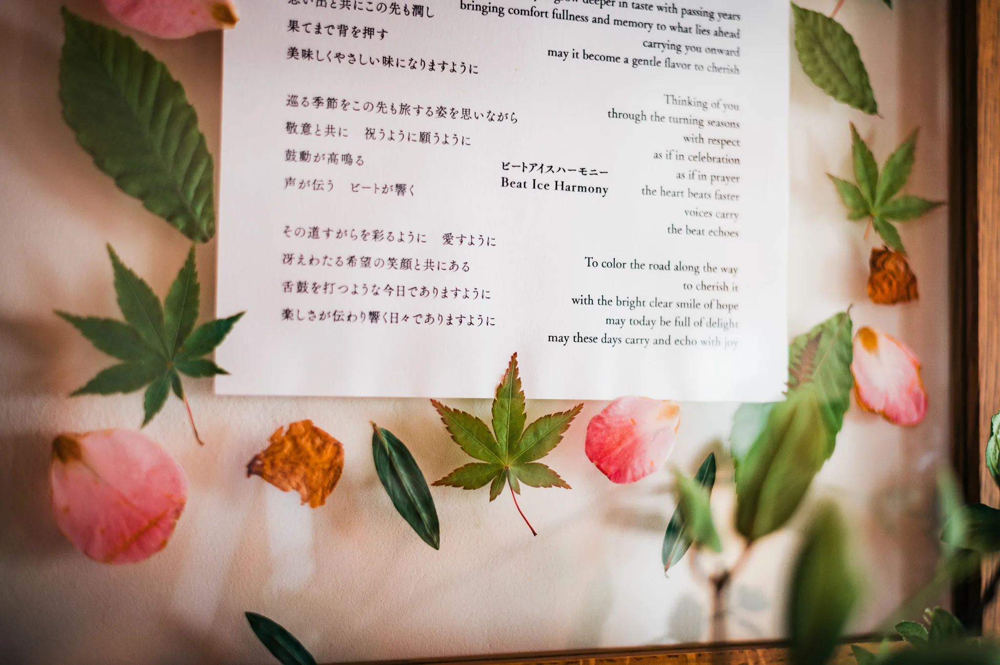
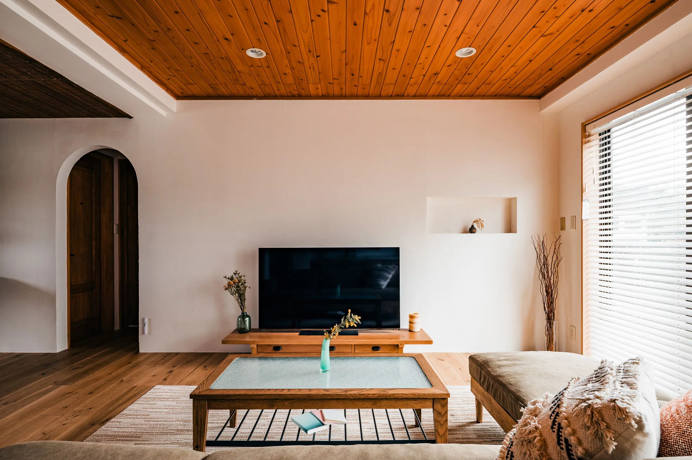
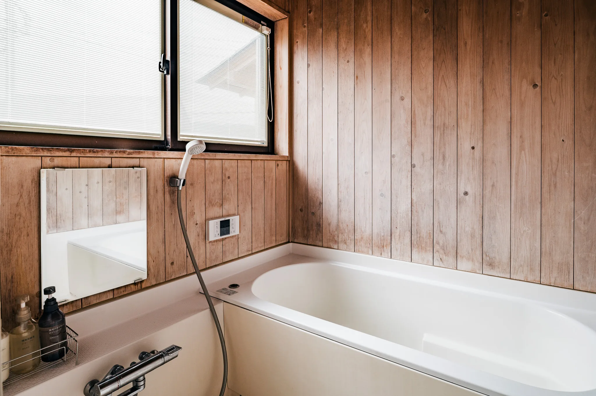
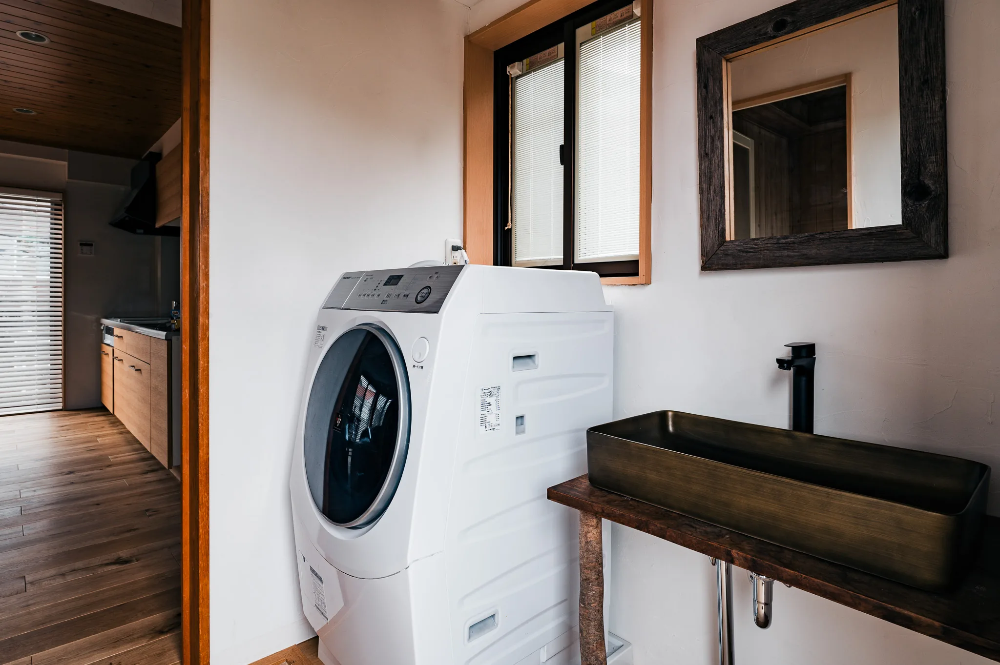
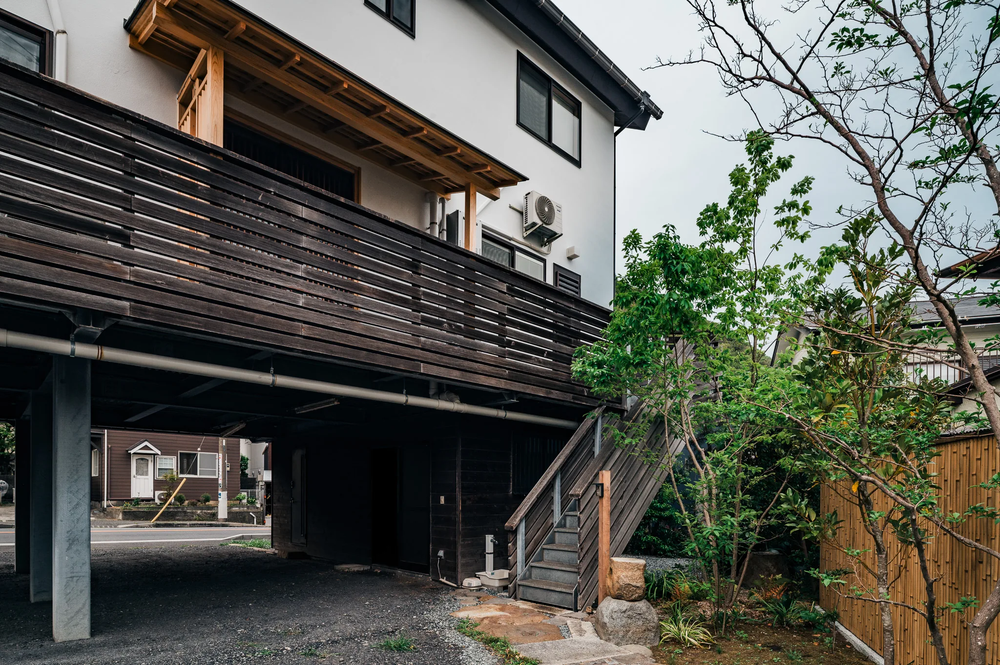
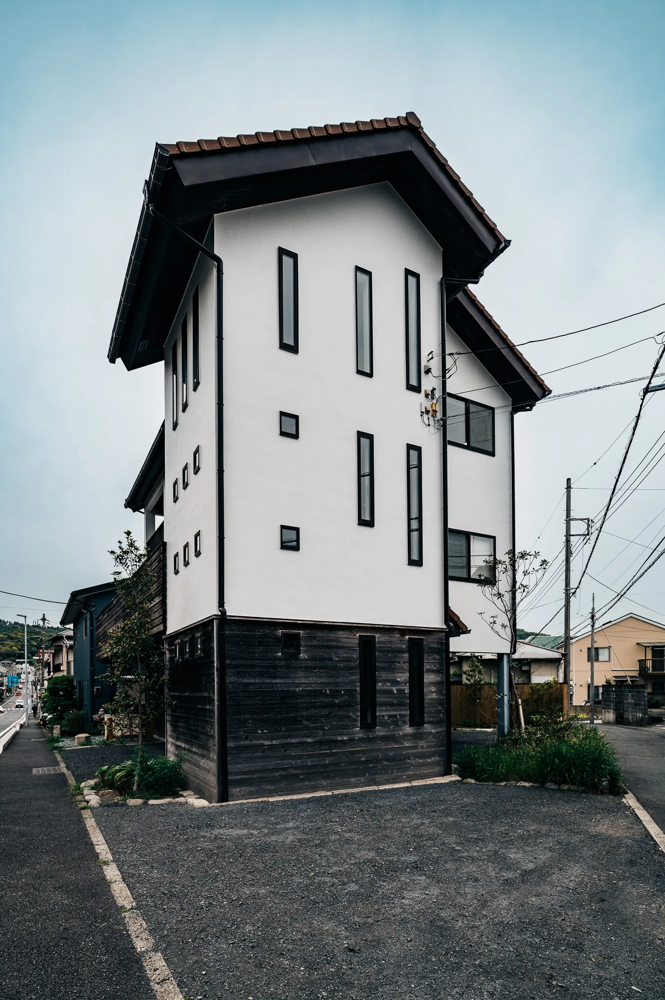
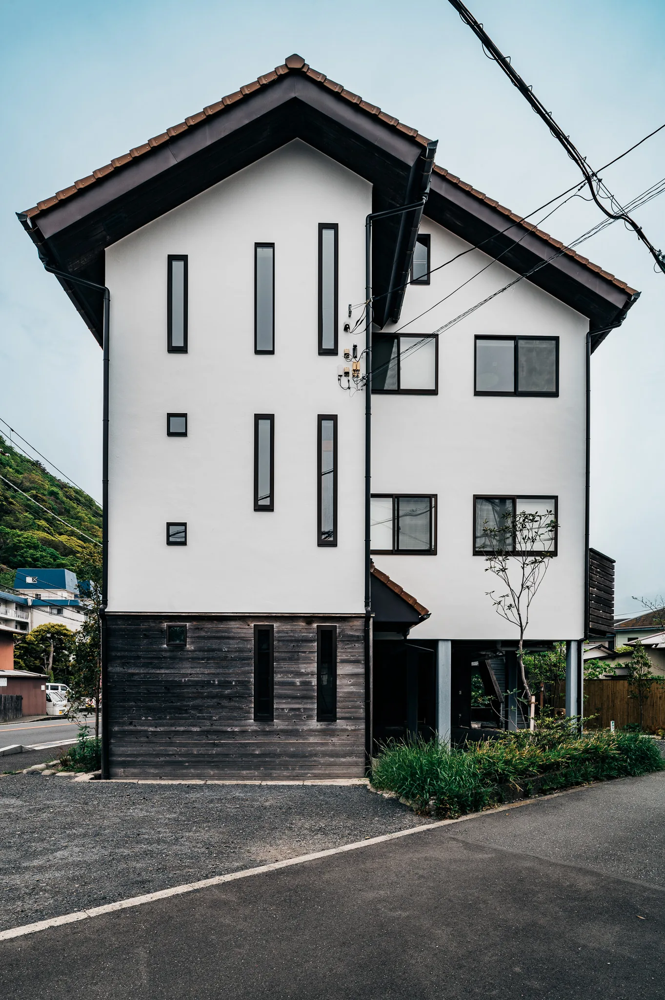
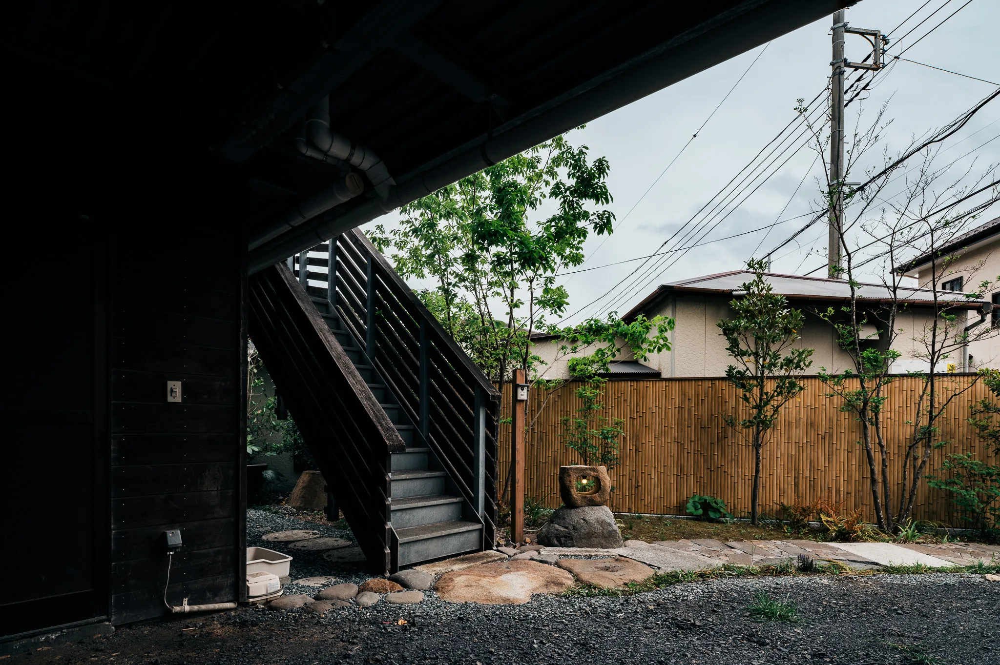

01
棚田を見て、味わう
葉山の棚田で育てたお米が、葉山アイスのアイスクリームに変わる。風景を「食べる」体験を、滞在中に。
A QUIET VILLA IN HAYAMA, ISSHIKI
葉山の風景に、 ゆっくり溶ける宿。
一色海岸まで徒歩 8 分 ── 海と里山に抱かれた一棟貸し
Concept
TERRA HAYAMA は、葉山への愛から生まれました。
この土地に暮らして十年、私たちは今もなお、この町の風景に魅了され続けています。
海越しに望む富士山、棚田が広がる里山。
それらに触れる中で、時の流れが少し緩み、呼吸が整っていく。
ここでは、訪れる人と葉山との距離が、ゆっくりとほどけていきます。

最大8名で泊まれる、ゆとりの間取り。 リビングダイニング・寝室・ひのきのバス・フルキッチン。







棚田・夕陽・葉山の食・抹茶。滞在中に出会える、葉山らしい四つの過ごし方。
01
葉山の棚田で育てたお米が、葉山アイスのアイスクリームに変わる。風景を「食べる」体験を、滞在中に。
02
一色海岸まで徒歩8分。澄んだ空気の晴れた日は、海の向こうに富士山。沈む夕陽が、海と山を一筋に染める。
03
葉山の漁港から朝の魚、山の畑から旬の野菜。地元の食材で、自分たちの食卓を整える喜び。

04
京都生まれの抹茶マシーンを、宿のキッチンに。挽きたての一服を、いつでも手元に。
The Landscape of Hayama





海と山が織りなす自然のリズム、 ここに息づく人の営み。 その重なりの中へ、ゆっくり。
一色海岸からほど近い、静かな住宅地に。 海まで、徒歩8分。
